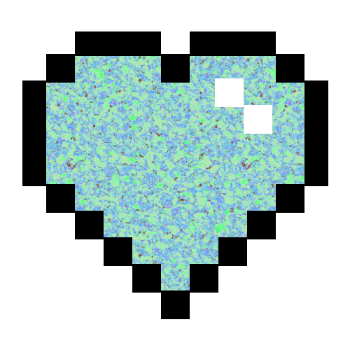

Pedro Miranda
Desenvolvedor Web
- 
-

Sobre
Olá! Meu nome é Pedro Miranda, e desejo a todos as boas vindas!
A tecnologia faz parte do meu dia desde muito cedo, tornando-se uma
paixão fundamental que me acompanha.
Possuo domínio e conhecimento nessas tecnologias: C/C++,
JavaScript, HTML e CSS.
Com o conhecimento que obtive até agora posso dizer que vejo nosso
código-fonte como um livro de poesias. Gosto de dizer que nós, dev's,
somos os autores e devemos contar boas histórias para nossos usuários.
Gosto de jogos em estilo pixel 2D, também costumo beber muito café (muito mesmo),
e meus principais hobies são tocar violão, cantar, escrever, ler, jogar jogos,
assistir filmes e séries.